8. Creating a mapper graph using computeMapper
This notebook will show how to construct a mapper graph from a point cloud using the computeMapper function.
[1]:
# Standard imports
import matplotlib.pyplot as plt
8.1. Generate example data
In this case, we will use an example data set from the sklearn package.
[2]:
from sklearn.datasets import make_circles
number_of_points = 500
data, labels = make_circles(n_samples=number_of_points, factor=0.4, noise=0.05, random_state=0)
plt.scatter(data[:, 0], data[:, 1], c=labels)
plt.axis('scaled');
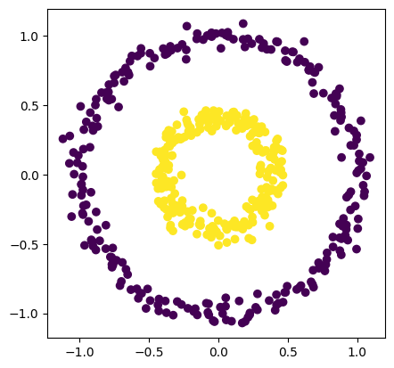
8.2. Computing an example mapper graph
We may compute the mapper graph of this shape using computeMapper. In this example, we use a cover from \(-1\) to \(1\) with 7 intervals overlapping 50%. The lens function used is just the first coordinate of each data point.
[3]:
from cereeberus import MapperGraph, computeMapper, cover
import numpy as np
import sklearn
graph = MapperGraph()
graph = computeMapper(pointcloud = data,
lensfunction=(lambda a : a[0]),
cover=cover(min=-1, max=1, numcovers=7, percentoverlap=.5),
clusteralgorithm=sklearn.cluster.DBSCAN(min_samples=2,eps=0.3).fit
)
graph.draw()
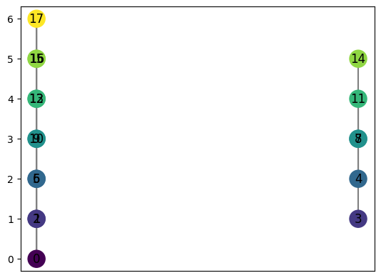
8.2.1. Breakdown of inputs
The computeMapper function takes 4 inputs:
A point cloud
A lens function
A cover
A clustering algorithm
Covers may be created using the cover method
[4]:
print(cover(min=-1, max=1, numcovers=4, percentoverlap=.5))
[(-1.125, -0.375), (-0.625, 0.125), (-0.125, 0.625), (0.375, 1.125)]
Covering sets may go beyond the specified range if they have a nonzero percentage overlap with other covering sets.
Both covers and point clouds may be input manually
[5]:
graph2 = computeMapper([(0.6, 0), (-0.1, 0.5)], (lambda a : a[0]), [(-1,0),(-0.5,0.5),(0,1)], "trivial")
graph2.draw()
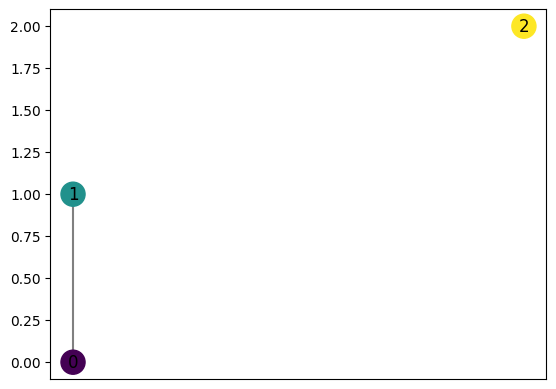
computeMapper allows for any sklearn clustering algorithm to be used as input. It will also work with the trvial clustering.
[6]:
from sklearn.datasets import make_moons
number_of_points = 200
data, labels = make_moons(n_samples=number_of_points, noise=0.05, random_state=0)
val = 0
pointcloud = []
while val < number_of_points:
pointcloud.append(data[val])
val += 1
[7]:
import matplotlib.pyplot as plt
plt.scatter(data[:, 0], data[:, 1], c=labels)
plt.axis('scaled')
[7]:
(np.float64(-1.2259004307319845),
np.float64(2.1731624220868624),
np.float64(-0.6639113257043391),
np.float64(1.162391196195627))
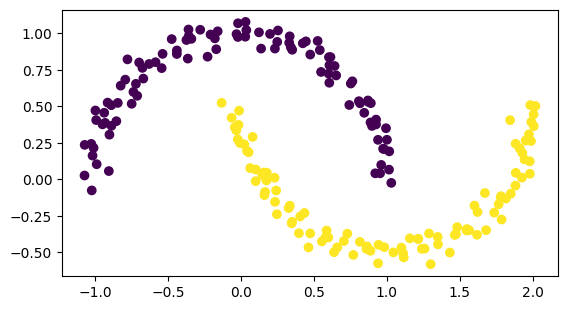
[8]:
graph = MapperGraph()
graph = computeMapper(pointcloud, (lambda a : a[1]), cover(min=-1, max=1, numcovers=7, percentoverlap=.4), sklearn.cluster.DBSCAN(min_samples=2,eps=0.3).fit)
graph.draw()
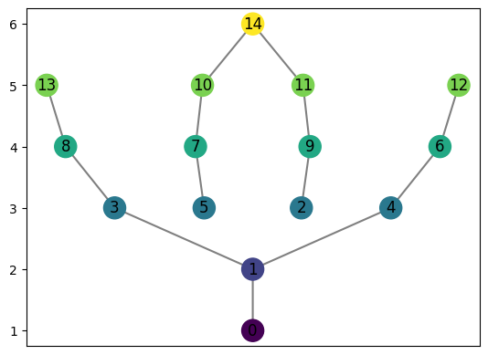
[9]:
graph = MapperGraph()
graph = computeMapper(pointcloud, (lambda a : a[1]), cover(min=-1, max=1, numcovers=7, percentoverlap=.4), sklearn.cluster.KMeans(n_clusters=4).fit)
graph.draw()
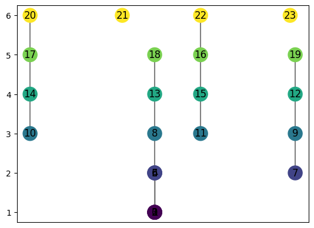
[10]:
graph = MapperGraph()
graph = computeMapper(pointcloud, (lambda a : a[1]), cover(min=-1, max=1, numcovers=7, percentoverlap=.4), sklearn.cluster.HDBSCAN(min_cluster_size=8, copy=False).fit)
graph.draw()
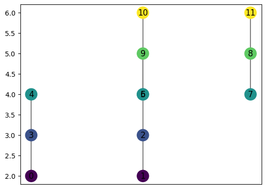
[11]:
graph = MapperGraph()
graph = computeMapper(pointcloud, (lambda a : a[1]), cover(min=-1, max=1, numcovers=7, percentoverlap=.4), "trivial")
graph.draw()
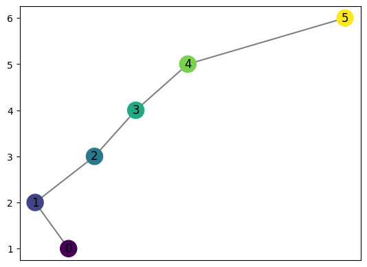
computeMapper orders the coveringsets it takes as input, preserving the location of each for better computing the distances between graphs
Notice where the labels for the graph start
[12]:
graph = MapperGraph()
graph = computeMapper(pointcloud, (lambda a : a[1]), cover(min=-10, max=10, numcovers=40, percentoverlap=.4), "trivial")
graph.draw()
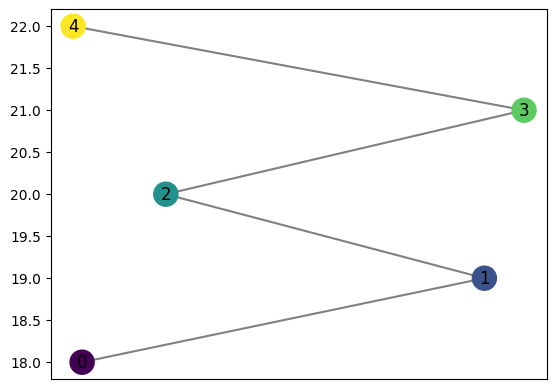
computeMapper accepts any function recognizable by numpy as input
[13]:
from sklearn.datasets import make_swiss_roll
number_of_points = 300
data, labels = make_swiss_roll(n_samples=number_of_points, noise=0.1, random_state=0)
val = 0
pointcloud = []
while val < number_of_points:
pointcloud.append((data[val][0],data[val][2]))
val += 1
[14]:
import matplotlib.pyplot as plt
plt.scatter(data[:, 0], data[:, 2], c=labels)
plt.axis('scaled');
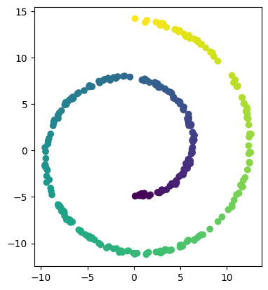
[15]:
graph = MapperGraph()
graph = computeMapper(pointcloud, (lambda a : a[1]), cover(min=-12, max=15, numcovers=10, percentoverlap=.4), sklearn.cluster.DBSCAN(min_samples=2,eps=3).fit)
graph.draw()
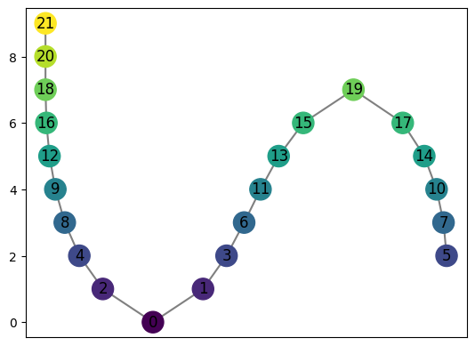
[16]:
graph = MapperGraph()
graph = computeMapper(pointcloud, (lambda a : a[1] * a[0]), cover(min=-200, max=200, numcovers=7, percentoverlap=.4), sklearn.cluster.DBSCAN(min_samples=2,eps=3).fit)
graph.draw()
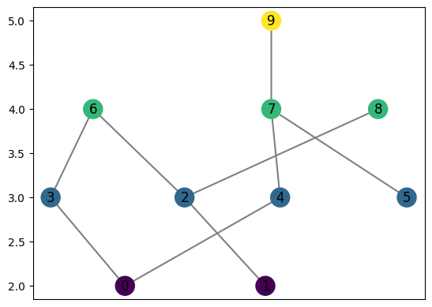
[17]:
graph = MapperGraph()
graph = computeMapper(pointcloud, (lambda a : np.sqrt(a[0]+15)), cover(min=0, max=6, numcovers=7, percentoverlap=.4), sklearn.cluster.DBSCAN(min_samples=2,eps=3).fit)
graph.draw()
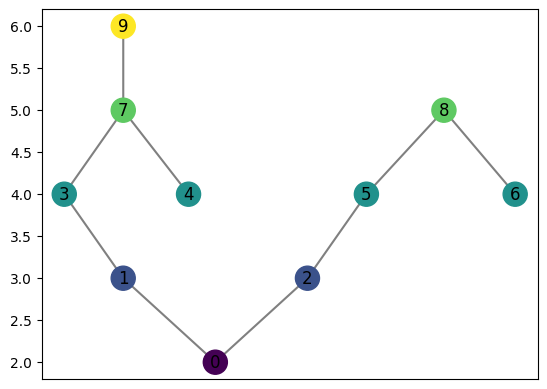
[18]:
graph = MapperGraph()
graph = computeMapper(pointcloud, (lambda a : np.sqrt(a[0]**2 + a[1]**2)), cover(min=0, max=15, numcovers=10, percentoverlap=.4), sklearn.cluster.DBSCAN(min_samples=2,eps=3).fit)
graph.draw()
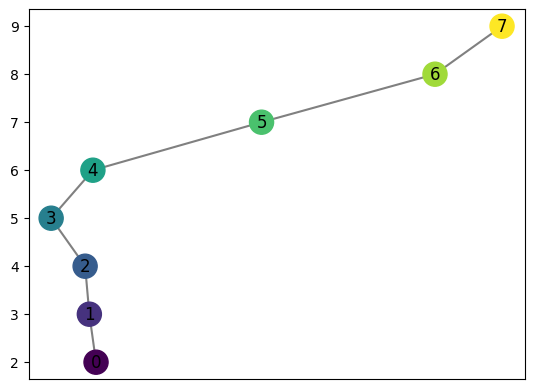